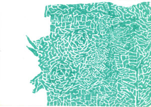
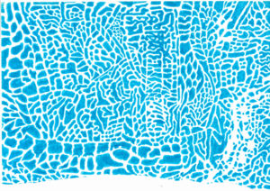

{#23} Farsi dei film

hurry hurry hurry
tutti che vengono al circo dei mostri
dove si ride alle deformità
tutti che vengono al circo dei mostri
nessuno ride quando se ne va
se non sono offuscati i vostri occhi
dall’infimo vapore dell’esterno
venite pure dentro questo inferno
e chi non crede col suo corpo tocchi
quanto di questo brulicare infermo
gli spetti come ad ogni spettatore
perché questo spettacolo interiore
risiede dove dite identitàGabriele Frasca, Rive, Einaudi, 2001
Care e cari dormienti,
prosegue il nostro lungo letargo autunnale, dopo l’abbuffata festivalizia.
Ecco però che mentre per un istante ci rigiriamo nel nostro giaciglio, ci scappa questa newsletter! Speriamo che come una timida scoréggia vi stuzzichi.
Alla scorsa edizione di Scienceground a Festivaletteratura abbiamo esplorato il tema “scarti”. Tanti però sono stati gli scarti di produzione. Tra questi, la nostra selezione di film e filmini, perfetti per spassarsela tra le coperte.
Prima però vi segnaliamo alcuni altri prodotti del nostro lento metabolismo.
- Le “nostre” microplastiche hanno contaminato anche il Festival delle Scienze di Suzzara
- L’artista Leone Contini ci offre una prospettiva sugli scarti di guerra.
- Con Nicola Armaroli abbiamo parlato di scarti energetici e di comunicazione scientifica.
Buona sonnolenza.
[Immagini di Alberto Motolese]

Mujin Chitai, No Man’s Zone, 2012
I resti di un disastro sono simboli attraverso cui incanalare la paura ed esorcizzare il dolore, oltre che moniti alla collettività, ma cosa accade quando sono invisibili? Viaggio tra i detriti, le scorie e gli esuli di Fukushima. Lo troviamo su Mubi.
Agnès Varda, Les glaneurs et la glaneuse (La vita è un raccolto) e Deux ans après, 2000-2002
Riflessione sul valore umano, sociale e artistico dello “spigolare” contemporaneo, che si ispira all’antica pratica di raccogliere le spighe di frumento rimaste nel campo dopo la mietitura. Varda parte proprio dai campi per raccontare gli emarginati, che vivono degli avanzi degli altri, e ci porta in giro per la Francia (di vent’anni fa), mostrandoci lo spigolare non solo come necessità ma anche come lusso, divertimento, arte e soprattutto resistenza.
Questo è un articolo di approfondimento, mentre i film sono su Mubi qui e [qui]( https://mubi.com/it/films/the-gleaners-and-i-two-years-later).
Gary Marcuse e Shi Lihong, China: Searching for Sacred Mountain, 2014 (CORTO)
L’antropologo Ernesto De Martino in Sud e Magia ci invitava a guardare al folklore come a un “relitto”, non inteso come semplice “avanzo archeologico” ma come “stimolo documentario che aiuta a misurare i limiti interni e la interna forza di espansione di una civiltà attuale”. Quali sono dunque i limiti della cultura scientifica? Com’è possibile che alcune credenze non solo non siano ormai addomesticate ma anzi conoscano una nuova popolarità? Che ruolo hanno nel nostro mondo? Alcuni accademici e alcuni governi (come quello cinese, ad esempio) sembrano aver individuato nel sacro un alleato potente da cui attingere forza nella lotta ambientale.
Qui il breve documentario e qui un articolo sul ruolo nella magia/religione/spiritualità in un “mondo senza grazia”.
Georgis Grigorakis, Digger, 2020
“Quando il mostro si insinua in casa nostra, scava e lancia tutti questi rifiuti tossici nella nostra terra, che vi aspettate? Se distruggi l’equilibrio della natura, si scatenano cambiamenti climatici, guerre civili… Funziona così.” Un western rivisitato sulla lotta all’interno di un villaggio e di un padre e un figlio in una terra scavata da una miniera. Miniera che, sì, riversa rifiuti tossici e abbatte alberi ma che, allo stesso tempo, sfama gli stessi individui che sfrutta e sfratta. Non più su Mubi, qui un’intervista al regista.
Akira Kurosawa, どですかでん Dodesukaden (Dodes’ka-Den), 1970
Il rifiuto di una vita da rifiuti. Kurosawa racconta otto storie intrappolate in una discarica alle porte di Tokyo dove l’alienazione sembra l’unica soluzione per fuggire dallo squallore quotidiano.
Qui un articolo piuttosto evocativo. (Wes Anderson ha fatto un omaggio a Kurosawa con L’isola dei cani.)

Liev Schreiber, Everything Is Illuminated (Ogni cosa è illuminata), 2005
Quale dolore racconterebbero le cianfrusaglie nei mercatini delle pulci? L’avventura di un avido collezionista di “oggetti famigliari”, alle prese col tentativo di ricostruire la storia della sua famiglia, ci offre uno spunto leggero per pensare al ruolo dei resti e dei luoghi nella post-memoria: ciò che rimane permette di ricostruire con l’immaginazione un passato che non può essere davvero ricordato.
Pelin Esmer, 11’e 10 kala (10 to 11) e Koleksiyoncu (The Collector), 2009-2002
La melanconica veglia del collezionista come atto di resistenza alla modernizzazione imposta e ai tempi che cambiano. Su Mubi qui e qui, articoli qui e qui.
Lewis Klahr, Circumstantial Pleasures, 2020
Collage d’avanguardia di sei episodi composti da materiali trovati e riutilizzati, “detriti culturali” che ci raccontano l’ansia, l’alienazione, l’agitazione, la precarietà e il fallimento della vita contemporanea.
Su Mubi qui.
Jorge Alberto Furtado, Ilha das Flores, 1989
Chi è in libertà? Questo breve esperimento (tra il documentario e il manifesto) ribalta le prospettive sul consumo e sull’essere consumati. Su Youtube o su un mirror.
Lucien Castaing-Taylor e Véréna Paravel, Leviathan, 2012
Documentario senza dialoghi diretto da due antropologhə e ambientato a bordo di un peschereccio al largo di New Bedford, Massachussets. Ispirandosi a Moby Dick e riprendendo la vita dei marinai fra la furia degli elementi e la macellazione del pescato – i cui resti sono lasciati agli onnipresenti gabbiani – quest’opera illumina di una luce brutale il punto di partenza una delle filiere più importanti dell’economia del cibo americana. L’intero film è ottenuto montando diverse inquadrature ottenute da telecamere con lenti “fisheye” (grandangolari “a occhio di pesce”) fissate ai vari angoli della nave.